Homographies are used to map points between images. This is accomplished with a 3x3 matrix that maps a point in one image (x, y), to its corresponding point in another image (x', y'). The bottom two equations are used to solve for the (x', y') values.
[x y 1 0 0 0 -x*x' -y*x'] h = x'
[0 0 0 x y 1 -x*y' -y*y'] h = y'
After getting the (x', y') values, the homography matrix is solved for by stacking the rows for all points gives a system Ah = b. After that, I selected 7-10 points in each image pair that correspond to each other.
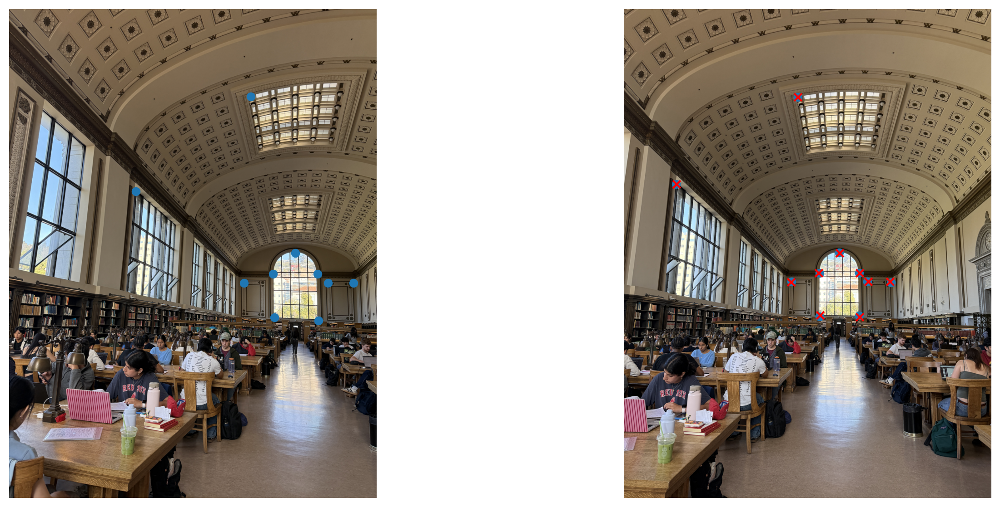
The blue dots are the manually clicked points, and the red x's are the other image's points mapped through the homography matrix.
First 4 rows of the system
[657.1 238.7 1 0 0 0 -311320.5 -113096.2] h = 473.8
[ 0 0 0 657.1 238.7 1 -157661.8 -57275.2] h = 239.9
[344.5 496.8 1 0 0 0 -48924.6 -70565.2] h = 142.0
[ 0 0 0 344.5 496.8 1 -164373.2 -237079.9] h = 477.2
...
Recovered H:
[[ 1.3389 0.0117 -306.50 ]
[ 0.2315 1.2291 -153.88 ]
[ 0.000317 0.000031 1 ]]
Mean reprojection error: 2.1 px.
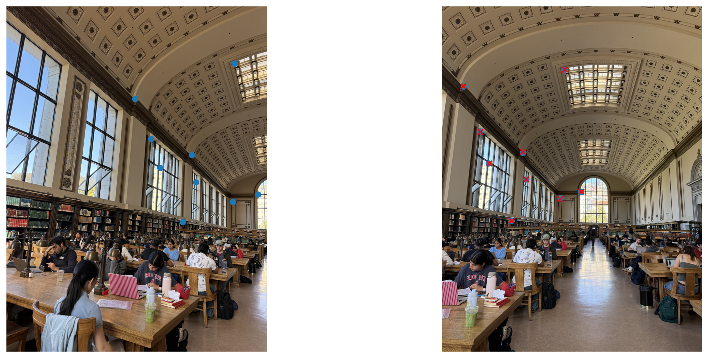
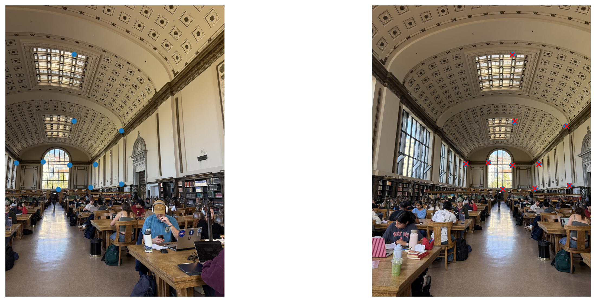
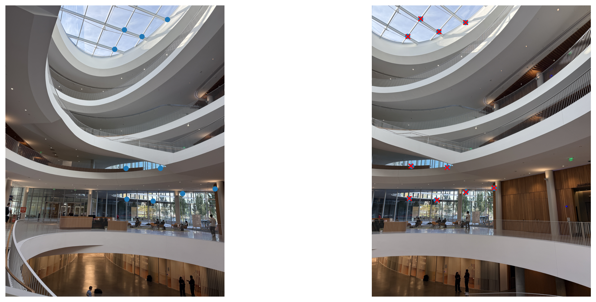
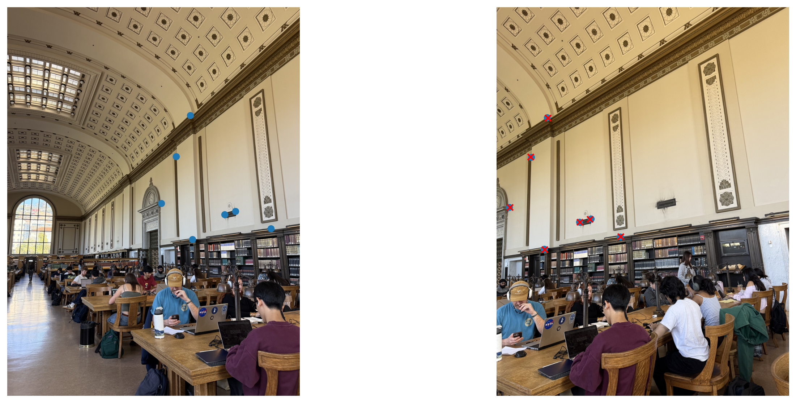
Image warping means transforming one image to another image's perspective using homography. Interpolation is the process of estimating a color value between two pixels. When warping an image, the output pixel is the result of interpolation of the input pixels. This can be accomplished using nearest neighbor or bilinear interpolation For nearest neighbor interpolation, you round the coordinates to the nearest pixel value (closest integer for the x and y coordinates). For bilinear interpoation, you take a weighted average of the 4 surrounding pixels, weighted by their distance to the output pixel. In the below examples, we tried bilinear and nearest neighbor interpolation on The Portrait of Madame X and two of Monet's water lilies. The photos of the paintings were taken at an angle, and after clicking on the top left, top right, bottom left, and bottom right corners of each painting, we were able to warp the images to a rectangle with a straight on perspective. The color quality when transferred from the original image to the warped images is quite similar, although the bilinear interpolation results are a bit blurrier. However, the bilinear interpolation was a bit slower than the nearest neighbor interpolation. Both methods did not do super well at preserving the original width of the paintings. The Portrait of Madame X is a bit less wide than the original painting, and the Monet paintings are much wider than their original paintings.
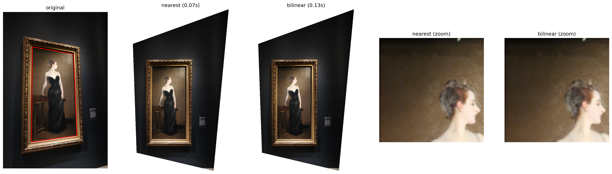
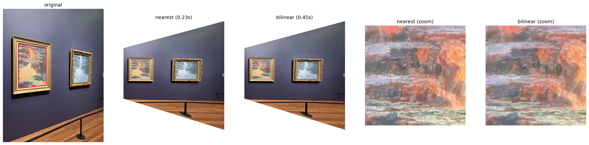
Mosaics consist of multiple images stitched together to create a larger image. For the Mosaics below, I kept the middle photo unwarped and warped the photos to their left and right using homographies from A.2 and bilinear interpolation from A.3. To determine the size of the final mosaic, I mapped the corners of every warped image into the middle image's coordinate system.
Weighted averaging / feathering is used to blend the images together. Each photo has a weight map that ranges from 1 at the center to 0 at the edges. The weight map is warped with each image so that wherever two images overlap, the output pixel is the weighted average of the two images. Thus, any differences in brightness are blended together. For example, in the first Mosaic below, in the no blending version, the rightside image has a slightly dark left edge that is visible, which the weight map removes. Another failure mode is that the weight map can cause ghosting since some people in the scene slightly moved between the photos.
mosaic = sum(weight_i * image_i) / sum(weight_i)
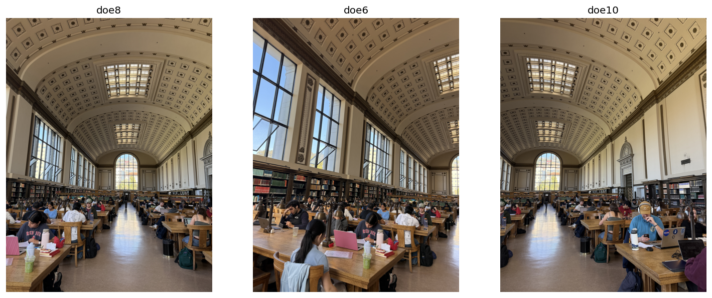
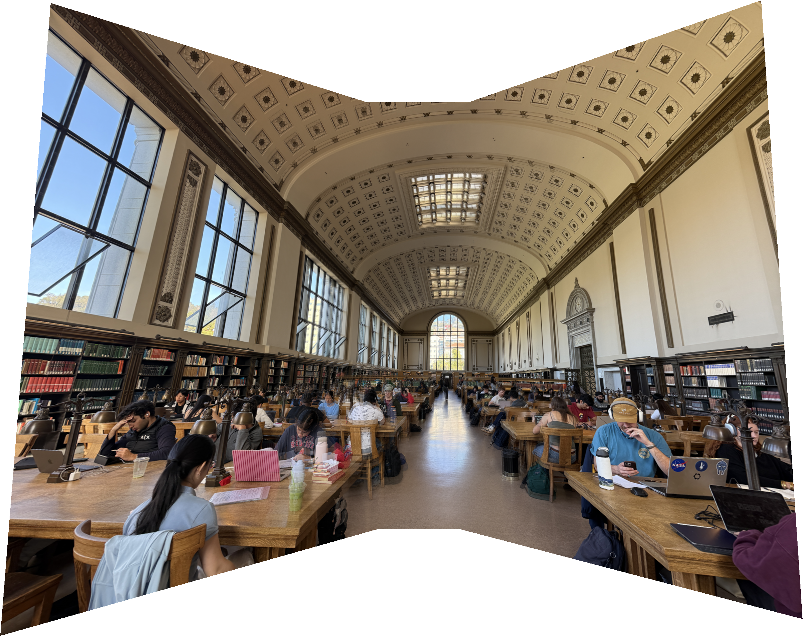
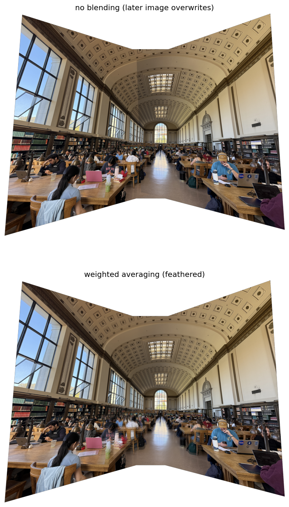
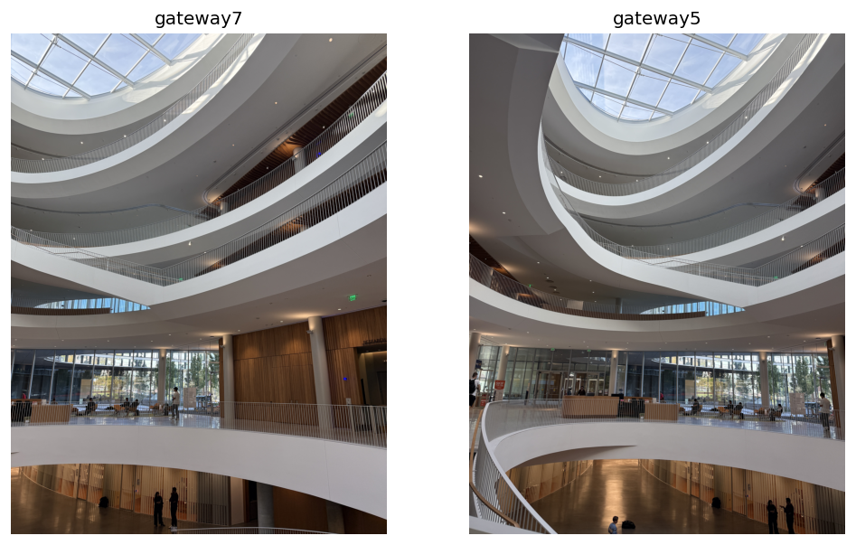
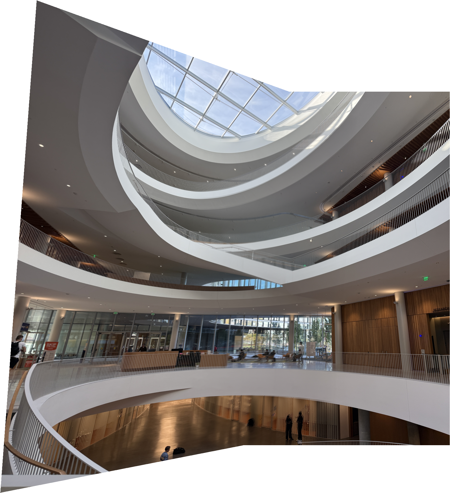
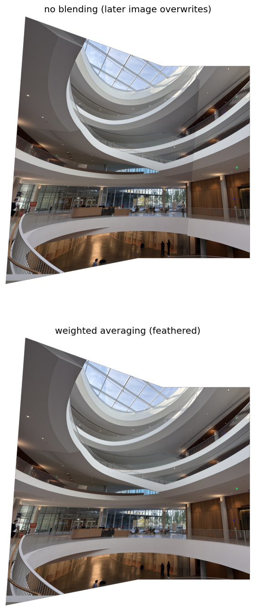
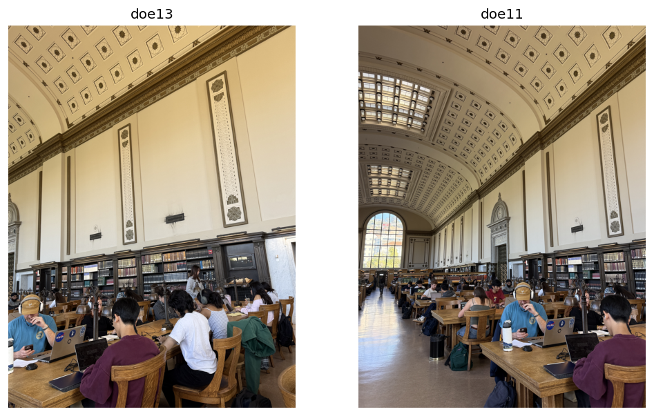
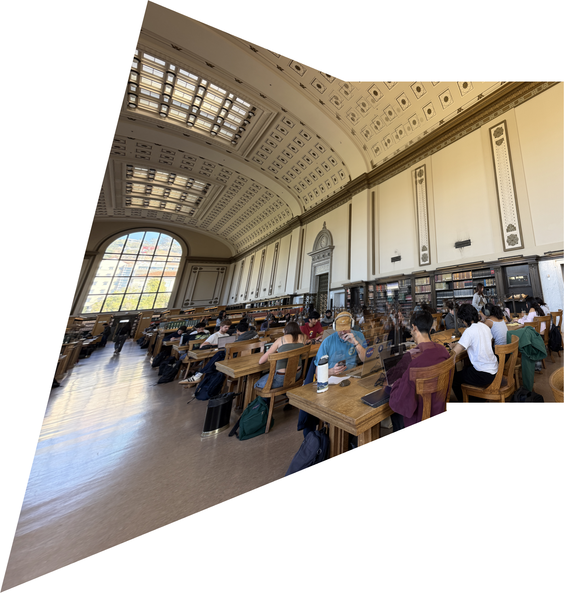
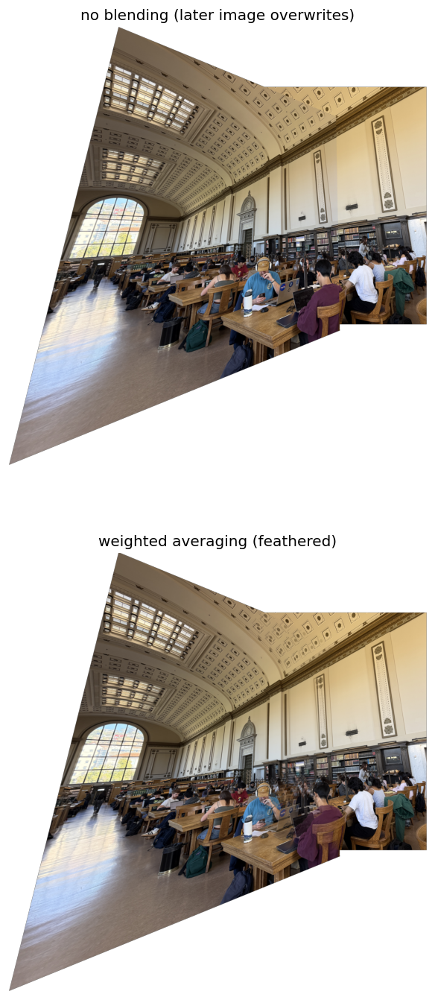